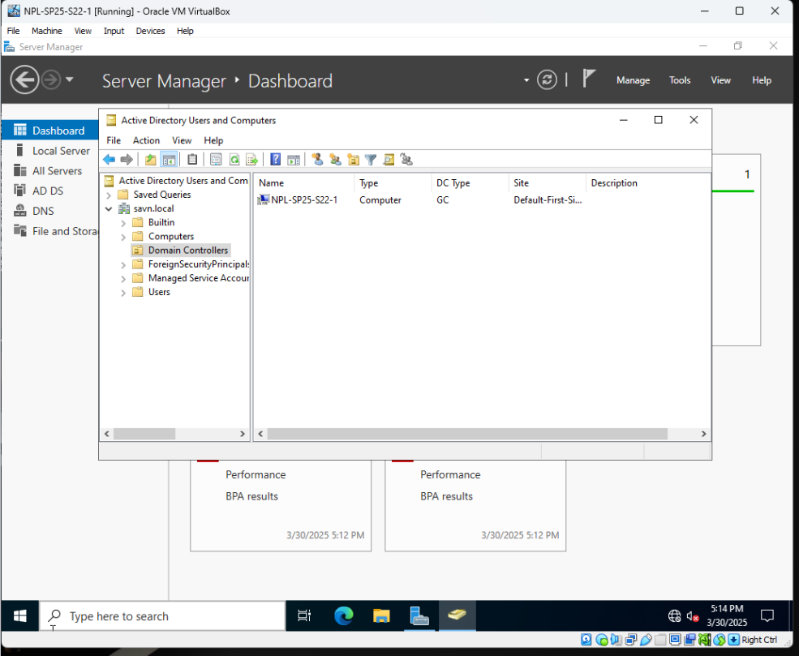

Implementing Active Directory Domain Services And Joining A Domain
This project involves configuring a virtual network of three machines. The main objective is to implement Active Directory Domain Services (AD DS) on one server to establish it as a domain controller and DNS server. The remaining two virtual machines are then joined to this new domain network.
Skills Learned
Network Configuration
Configuring a virtual network with multiple machines and establishing a domain.
Active Directory Managment
Installing and configuring Active Directory Domain Services (AD DS) to provide centralized and secure network management.
Domain Control
Promoting a server to a domain controller and configuring its server roles.
Client-Server Integration
Joining virtual machines to a domain to allow them to access network resources.
Troubleshooting
Verifying network connectivity between virtual machines using tools like ping.
3. Object Management in Active Directory
